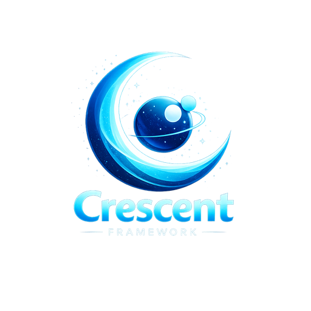

01Primeiro contato
Do clone à primeira resposta.
O crescent-starter traz um hello world, OpenResty e MySQL em containers. As migrations pendentes rodam ao subir e o código é recarregado a cada edição.
/api/hello— JSON com a query validada/health— liveness, sem dependências/ready— readiness, verifica o banco
$ git clone https://github.com/daniel-m-tfs/crescent-starter meu-app $ cd meu-app && cp .env.example .env $ docker compose up --build # MySQL sobe, as migrations rodam, o OpenResty escuta em :8080 # em outro terminal $ curl "http://127.0.0.1:8080/api/hello?name=Ada" {"message":"Hello, Ada!"} $ curl http://127.0.0.1:8080/ready {"status":"ready","checks":{"database":{"status":"ok","duration_ms":1}}} $
duration_ms varia conforme o ambiente.
02Arquitetura
Cada camada faz o que sabe fazer.
O Nginx recebe a conexão. O Crescent roda dentro de cada worker do OpenResty, montado uma única vez, e conversa com o MySQL por cosockets — sem bloquear o worker.
- Cliente HTTP / HTTPS
- Nginx · OpenResty TLS, workers, keep-alive, limites, arquivos estáticos
-
Crescent
- middleware
- router
- action
- MySQL cosockets · SQL parametrizado
O OpenResty cuida de
Conexões HTTP e HTTPS, terminação TLS, workers, keep-alive, limites de body e header,
timeouts e arquivos estáticos em /public/.
O Crescent cuida de
Rotas, actions, middleware, validação, erros padronizados, ORM e migrations, templates, segurança e CLI.
I/O não bloqueante
MySQL, cliente HTTP e SMTP usam os cosockets do OpenResty: enquanto uma consulta espera, o worker continua atendendo outras requisições.
03Código
Pouca cerimônia. Nada escondido.
Um módulo registra suas rotas; a action recebe ctx e responde. O schema valida a
query antes da action — entrada inválida vira 422 com
validation_failed.
Os três primeiros arquivos são o hello world do starter, sem cortes. O model é o exemplo da documentação.
src/hello/init.lua
local actions = require("src.hello.actions.hello")
local Module = {}
function Module.register(app)
app:get("/", actions.index, "hello.index")
app:get("/api/hello", app:validated({
name = { type = "string", min_length = 1, max_length = 50 },
}, actions.greet, "query"), "hello.greet")
end
return Modulesrc/hello/actions/hello.lua
local HelloActions = {}
-- GET /api/hello?name=Ada — `name` já foi validado por app:validated
function HelloActions.greet(ctx)
local name = ctx.query.name
if name == nil or name == "" then name = "World" end
return ctx:json(200, { message = "Hello, " .. name .. "!" })
end
return HelloActionsapp.lua
-- Montado uma vez por worker; o nginx chama require("app"):run()
local Crescent = require("crescent")
local Config = require("crescent.config")
local app = Crescent.new(Config.load())
app:use(Crescent.middleware.security_headers.create())
app:use(Crescent.middleware.request_log.create({
skip = function(ctx) return ctx.path == "/health" or ctx.path == "/ready" end,
}))
require("src.health").register(app)
require("src.hello").register(app)
return appsrc/users/models/user.lua
local Model = require("crescent.model")
local User = Model:extend({
table = "users",
fillable = { "name", "email", "password" },
hidden = { "password" },
timestamps = true, -- created_at / updated_at
soft_deletes = true, -- deleted_at
validates = {
name = { required = true, min_length = 3 },
email = { required = true, email = true, unique = true },
},
relations = {
posts = { type = "has_many", model = "src.blog.models.post" },
},
})
-- Eager loading: uma query por relação, sem N+1
local users = User:query():with("posts"):get()
return User04Recursos
O necessário para uma API de verdade.
-
Rotas
Parâmetros, opcionais e wildcard, grupos e rotas nomeadas.
HEADusa a rotaGET;405incluiAllow.app:group("/api", fn) -
Middleware e validação
Middleware em cadeia com
next(); schemas validam body ou query antes da action. Erros comcodeestável.app:validated(schema, action) -
ORM para MySQL
Models, relações com eager loading, paginação, soft deletes e hooks. Todo SQL é parametrizado.
Model:extend{ ... } -
Migrations e seeders
Arquivos versionados com
upedown, rollback e status. No Docker, as pendentes rodam ao subir.bin/crescent db:migrate -
Segurança
JWT com revogação compartilhada entre workers, senhas com PBKDF2 via OpenSSL, auth, CORS, headers de segurança e rate limit.
crescent.security.jwt -
Web
Cookies, sessões criptografadas, proteção CSRF, uploads multipart e views em etlua com layout.
ctx:view("page.etlua", data) -
Observabilidade
Logs JSON estruturados com redação de segredos,
X-Request-Idem toda requisição,/healthe/ready.crescent.health -
CLI
Novo projeto, módulo CRUD completo com testes, migrations, seeders, servidor, lista de rotas e testes.
bin/crescent make:module Product -
Docker
Imagem de produção com logs em stdout e um
docker-composede desenvolvimento com MySQL e recarga automática.docker compose up --build
05Status
Onde estamos, sem exageros.
O Crescent 2.0 é uma reescrita. A versão 1.x rodava sobre Luvit; a 2.0 entrega o HTTP ao OpenResty e mantém o estilo de módulos, actions e models declarativos.
- Versão
- 2.0 — reescrita sobre OpenResty
- Runtime
- OpenResty (Nginx + LuaJIT, Lua 5.1)
- Banco
- MySQL / MariaDB — o único suportado por enquanto
- Licença
- MIT
Vindo do 1.x
A API mudou em pontos pontuais — por exemplo, ctx.json(...) virou
ctx:json(...) e middleware interrompe a cadeia retornando uma resposta. As notas
de migração estão no README do framework.
Próximos passos
A prioridade é consolidar uma API pública pequena e estável. Outros bancos dependem de adapters e não têm data prometida. Bugs e sugestões são bem-vindos nas issues.

Comece pelo starter.
Um repositório, dois comandos, uma API respondendo em :8080.
cp .env.example .env && docker compose up --build